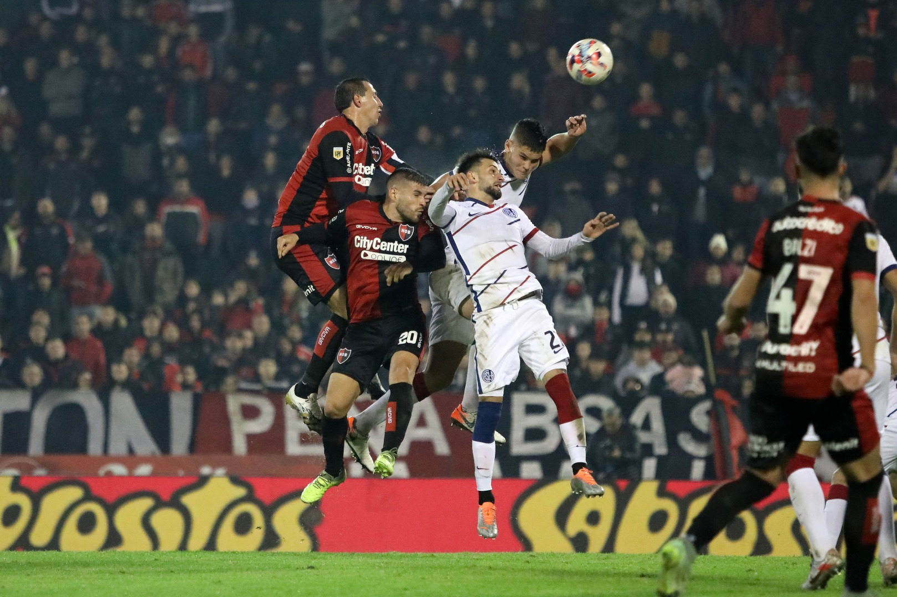

Igualdad en casa
Newell’s y San Lorenzo no se sacaron diferencias en el Coloso. Fundamental no perder de local.
Luego de la buena victoria conseguida fuera de casa en el debut ante Banfiel el equipo conducido por Javier Sanguinetti debía volver a jugar en casa, paradójicamente ante el mismo rival que la última vez: el pasado mes de abril la Lepra y el Ciclón de enfrentaron por la penúltima fecha de la Copa y allí los visitantes se impusieron por 2 a 1.
En esta noche de jueves y con el numeroso acompañamiento de los hinchas leprosos, Newell’s quería conseguir los tres puntos para encarrilar su segundo triunfo de manera consecutiva en este inicio de campeonato y para ello salieron al campo desde el inicio Ramiro Macagno; Armando Méndez, Cristian Lema, Willer Ditta, Martín Luciano, Julián Fernández, Pablo Pérez, Guillermo Balzi, Francisco González, Ramiro Sordo y Juan Manuel García.
Rápidamente tras el pitazo inicial de Silvio Trucco los dirigidos por Archu hicieron notar que el trámite del juego los tendría como protagonistas a través de la posesión del balón ante un San Lorenzo que buscaba refugiarse. Sin embargo y para el lamento de los presentes, sobre los 15 minutos el capitán leproso debió dejar el terreno de juego por un malestar físico, dando ingreso en su lugar al joven Marcos Portillo.
A pesar de que Newell’s ejerció el protagonismo en el Parque, esto no se vio plasmado en situaciones reales de peligro sobre el arco defendido por Torrico. Si bien el Rojinegro intentó con algún remate lejano y el desequilibrio de sus extremos, estos no encontraron la efectividad ni precisión en los metros finales, aunque también es importante mencionar que el local no sufrió más que un envió de pelota detenida sobre su propio arco.
Para el segundo tiempo no hubo variantes y el juego parecía ir por el mismo lado. Así fue como sobre los 4 minutos Newell’s contó con su primera aproximación y segundos más tarde se dio la primera polémica de la noche con el penal sancionado sobre Panchito y la expulsión a Gattoni en el Ciclón, decisiones que enseguida Silvio Trucco decidió anular a instancias del VAR.
El resultado continuaba en cero y a los 14 minutos se daba una nueva jugada protagonista en el partido con la infracción que Cristian Lema cometió sobre la mitad del campo y que en primera instancia el árbitro del partido no sancionó. Minutos después y con la participación nuevamente de sus asistentes a través del VAR, Silvio Trucco decidió mostrarle la tarjeta roja al defensor leproso y por ende Newell’s se quedaba con un jugador menos en cancha y 30 minutos por delante.
Inmediatamente Sanguinetti metió mano en el equipo y Gustavo Velázquez sustituyó a Guillermo Blazi, sumándose más tarde los ingresos de Leonel Vangioni, Genaro Rossi y Luciano Cingolani. A pesar del hombre de menos, la Lepra nunca sufrió y Ramiro Macagno casi que no fue llamado a participar. Incluso Newell’s pudo haberse quedado con la victoria: dos veces lo tuvo Rossi y una en el final Panchito, pero la mala definición, el travesaño y luego la atajada fenomenal de Torrico le impidieron el triunfo al Rojinegro.
Ya este viernes por la mañana el plantel regresó a los entrenamientos pensando en el próximo duelo frente a Talleres en Córdoba por la fecha número 3, duelo que se dará a las 19 horas y con el arbitraje de Mauro Vigliano.